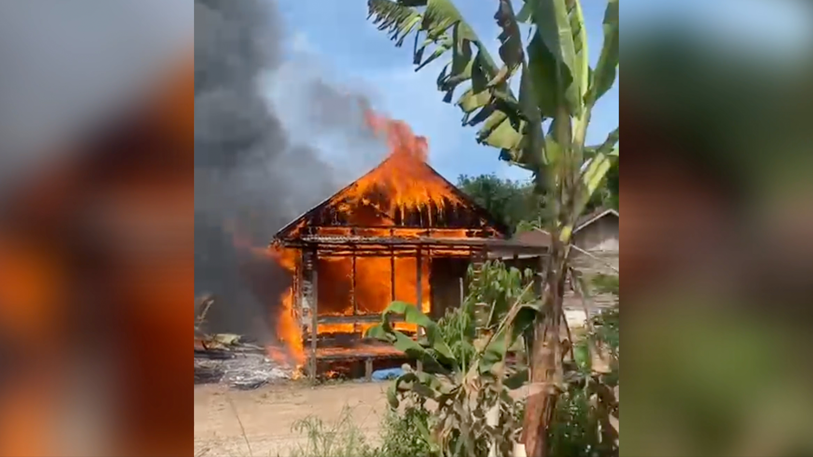

23 Februari 2026

Kebakaran kembali melanda wilayah Kecamatan Batibati, Kabupaten Tanah Laut (Tala), Kalimantan Selatan, pada Selasa pagi (17/2/2026) sekitar pukul 09.45 Wita.
Kabar mengenai insiden tersebut dengan cepat tersebar melalui berbagai grup percakapan di media sosial setempat. Beberapa rekaman video singkat yang beredar memperlihatkan api yang berkobar cukup besar dan melahap bangunan rumah.
Sempat muncul informasi bahwa peristiwa itu terjadi di Desa Pandahan. Namun kabar tersebut kemudian diluruskan. Kepala Desa Pandahan, Halfian Taurus, saat dimintai keterangan menegaskan bahwa lokasi kebakaran bukan berada di wilayah desanya.
Warga sekitar terlihat berupaya memadamkan api secara swadaya dengan menyiramkan air menggunakan ember agar kobaran tidak semakin meluas. Tidak lama kemudian, tim pemadam kebakaran gabungan tiba di lokasi kejadian. Bersama masyarakat, mereka melakukan proses pemadaman hingga api akhirnya berhasil dikendalikan.
← Kembali ke Beranda